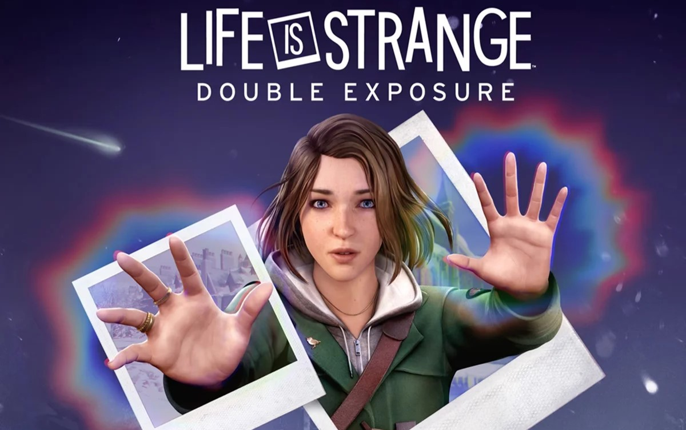
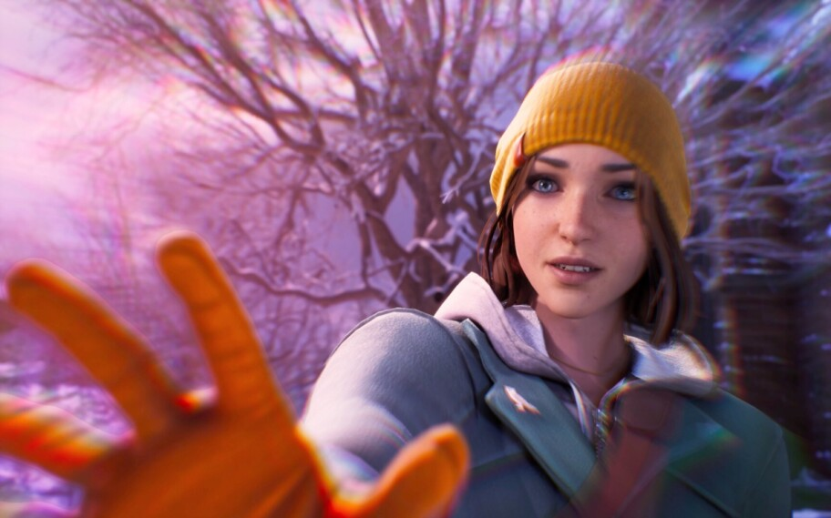
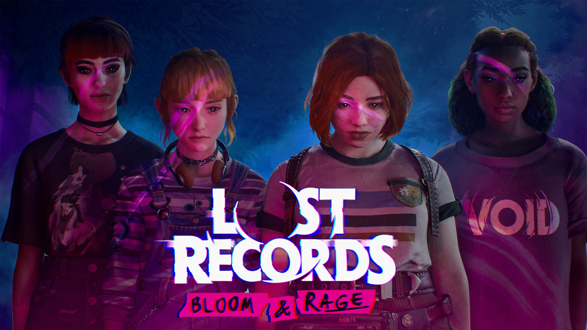

"Life is Strange: Double Exposure" é o próximo capítulo da aclamada série de aventuras narrativas, trazendo Max Caulfield de volta como protagonista. Situado na prestigiosa Caledon University, o jogo mistura mistério, drama e elementos sobrenaturais.
Menu
Gerais
Life is Strange:
Double Exposure
Max Caulfield retorna em "Life is Strange: Double Exposure", onde deve resolver e prevenir o assassinato de sua nova amiga Safi navegando entre duas realidades paralelas.
Por Isaque G. S. Brandão | 28/06/2024

Fonte: Deck Nine
Apresentação
Início
O enredo começa quando Max Caulfield, agora fotógrafa residente na Caledon University, encontra sua nova amiga, Safi, morta na neve. Desesperada para salvar Safi, Max tenta usar seu poder de Rewind, mas acaba abrindo um portal para uma linha do tempo paralela onde Safi ainda está viva, mas continua em perigo.
Trailer de jogo
"Life is Strange Double Exposure"
Desenvolvimento
"Double Exposure" explora a habilidade única de Max de manipular o tempo, agora ampliada para permitir a navegação entre duas realidades distintas. Max deve usar essa habilidade para investigar o assassinato de Safi e descobrir a identidade do assassino. A narrativa se desenrola em um ambiente universitário rico em detalhes, repleto de personagens novos e antigos que ajudam ou atrapalham Max em sua missão.

Fonte: Deck Nine
O jogo promete momentos de alta tensão e escolhas difíceis que impactam diretamente o desenrolar da história. Além disso, os jogadores podem explorar a mecânica de "Shift", que permite a Max alternar entre as realidades para coletar pistas e resolver quebra-cabeças.
Conclusão
"Life is Strange: Double Exposure" promete ser uma adição emocionante à série, combinando elementos familiares com novas mecânicas e uma trama intrigante. Com um enredo que desafia os jogadores a pensar criticamente e tomar decisões que afetam duas realidades, este jogo tem potencial para ser um dos mais memoráveis da franquia. A habilidade de Max de manipular o tempo e navegar entre realidades oferece uma experiência de jogo única e envolvente. Pessoalmente, estou ansioso para ver como a história de Max e Safi se desenrola e como as novas mecânicas de jogo irão influenciar a narrativa e a jogabilidade
Veja também

Conhecendo o novo "Lost Records: Bloom & Rage"
Após 27 anos sem contato, as amigas do ensino médio terão que se reunir para desvendar um segredo enterrado a muito tempo, na qual as fez cortar contato umas com as outras durante muito tempo.

Enredo de Tomb Raider
"Tomb Raider" (2013) é um jogo de ação e aventura desenvolvido pela Crystal Dynamics e publicado pela Square Enix. É um reboot da série, apresentando uma versão mais jovem e inexperiente de Lara Croft, que deve sobreviver em uma ilha misteriosa cheia de perigos.